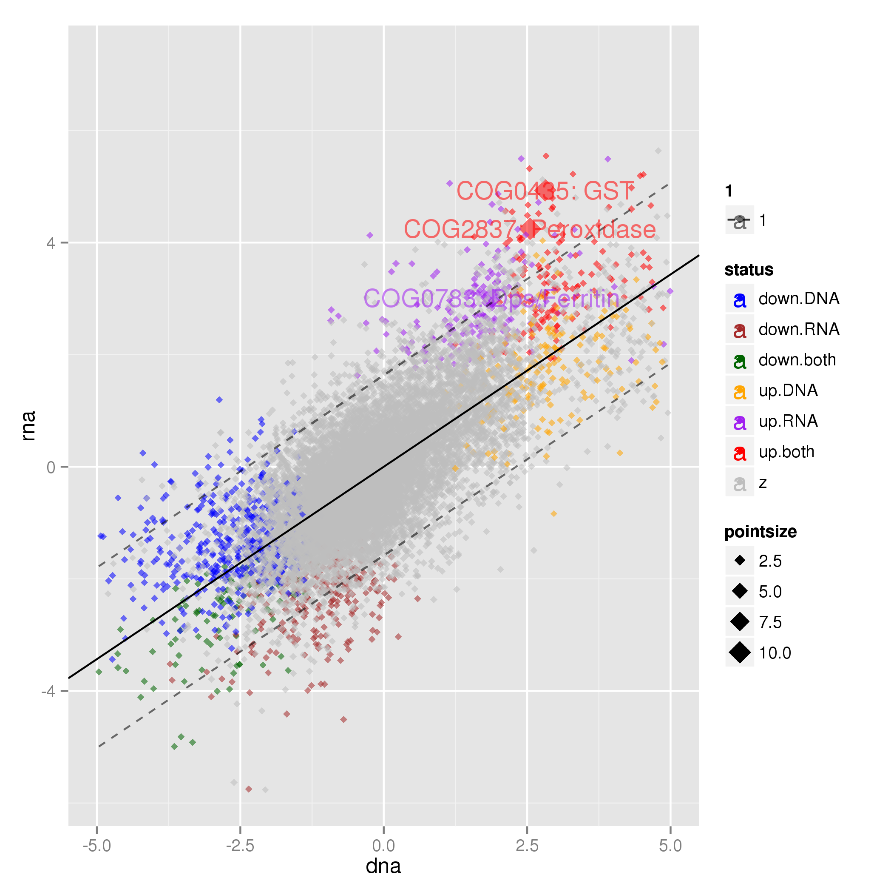

Defining colitis-responsive NOGs¶
In the compare_datasets/ directory create a link to the goi.tsv file in the data/ directory. This will become clearer in a little while:
$ ln -s <path_to_data>/data/goi.tsv .
Out metagenomeSeq analysis was performed on NOGs and we identified 1221 and 669 NOGs to be differentially abundant in metagenomic and metatranscriptomic data sets, respectively. The overlap between these sets suggested that there were some NOGs that were transcriptionally activated in colitis, leading us to hypothesise that these were due to responses by bacteria to an alteration in the gut niche.
A few tasks were performed before we produced Fig. 5a some of which did not end up in the manuscript. For example we built the RNA fold / DNA fold ratio for NOGs using the metagenomeSeq differential abundance files. In the compare_datasets/ directory do:
>> import Proj029Pipelines.PipelineMetaomics as PipelineMetaomics
>> PipelineMetaomics.buildRNADNARatio("<path_to_DNA>/DNA/gene_counts.diff.tsv",
"<path_to_RNA>/RNA/gene_counts.diff.tsv",
"rna_dna_ratio.tsv")
- then we build the differentially abundant NOGs list from database (Hh + aIL10R vs. Steady state) for each of DNA and RNa
data sets:
>> PipelineMetaomics.buildGeneDiffList("<path_to_RNA>/RNA/csvdb", "common_genes.tsv", "rna_diff_genes.tsv") >> PipelineMetaomics.buildGeneDiffList("<path_to_DNA>/DNA/csvdb", "common_genes.tsv", "dna_diff_genes.tsv")
and just before plotting we annotate NOGs with their differential abundance status i.e in DNA, RNA or both data sets:
>> PipelineMetaomics.annotateRNADNARatio("rna_dna_ratio.tsv",
"dna_diff_genes.tsv",
"rna_diff_genes.tsv",
"rna_dna_ratio.annotated.tsv")
We then plot the DNA and RNA fold changes, fit a linear model and plot the 95% prediction intervals. There is a little bit of sneakyness here as before we created the final plot we found NOGs of interest. This function picks up a file called goi.tsv that contains annotations for the plot. These annotations are for NOGs that are annotated as being involved in oxidative stress resistance and are up-regulated in metatranscriptomic data and defined as colitis-responsive (lying outside of the 95% prediction interval for the model fit):
>> PipelineMetaomics.plotSets("rna_dna_ratio.annotated.tsv",
"rna_dna_ratio.annotated.png")
This will produce Fig. 5a.
{kind=link}
We were interested predominantly in those NOGs that were defined as colitis responsive. We therefore annotated them as such - defined as being outside of the 95% prediction interval:
>> PipelineMetaomics.buildGenesOutsidePredictionInterval("rna_dna_ratio.annotated.tsv", "rna_dna_ratio.annotated.outsidepi.tsv")
This produces the following file with a column describing the status of each NOG (pi_status) that determines whether or not it falls outside of the 95% prediction interval and in which direction
gene dna rna pdna prna ratio status lwr upr pi_status NOG318244 -1.03311983427 -3.88099075439 0.227566146514034 0.000732213528700738 -2.84787092012783 down.RNA -2.29189879455845 0.924539008671926 diff.down.rna NOG130535 1.57674408446 4.10185194239 0.0489497441044796 0.000732213528700738 2.52510785792768 up.both -0.500617727281953 2.71597876719476 diff.up.rna NOG134793 2.23869128315 4.54943410575 0.0328705226009625 0.000732707448196766 2.31074282259625 up.both -0.0463574163834217 3.17041411560104 diff.up.rna NOG288530 4.52461981525 5.2148699462 0.00435113290891389 0.000732707448196766 0.69025013094869 up.both 1.52214814358271 4.73994333954382 diff.up.rna NOG73003 2.93026599661 4.60138832113 0.0171404768468839 0.000798074756693038 1.67112232452162 up.both 0.428205612895006 3.64521825858309 diff.up.rna NOG242700 2.70090741616 4.5185334849 0.0291946059040304 0.000798074756693038 1.81762606873595 up.both 0.270821573253439 3.48774765892459 diff.up.rna COG0418 7.40633864052 4.87181180102 0.00161195783102831 0.000801401399329138 -2.53452683949718 up.both 3.4989965428968 6.71900772759713 NA COG0435 2.81674412896 4.933419462 0.0292484323181148 0.000801401399329138 2.11667533304774 up.both 0.350308216294483 3.56727720073607 diff.up.rna NOG310959 2.94747733379 4.63709916181 0.0234651617179669 0.00113572329548064 1.68962182801844 up.both 0.440015764023919 3.6570351692761 diff.up.rna